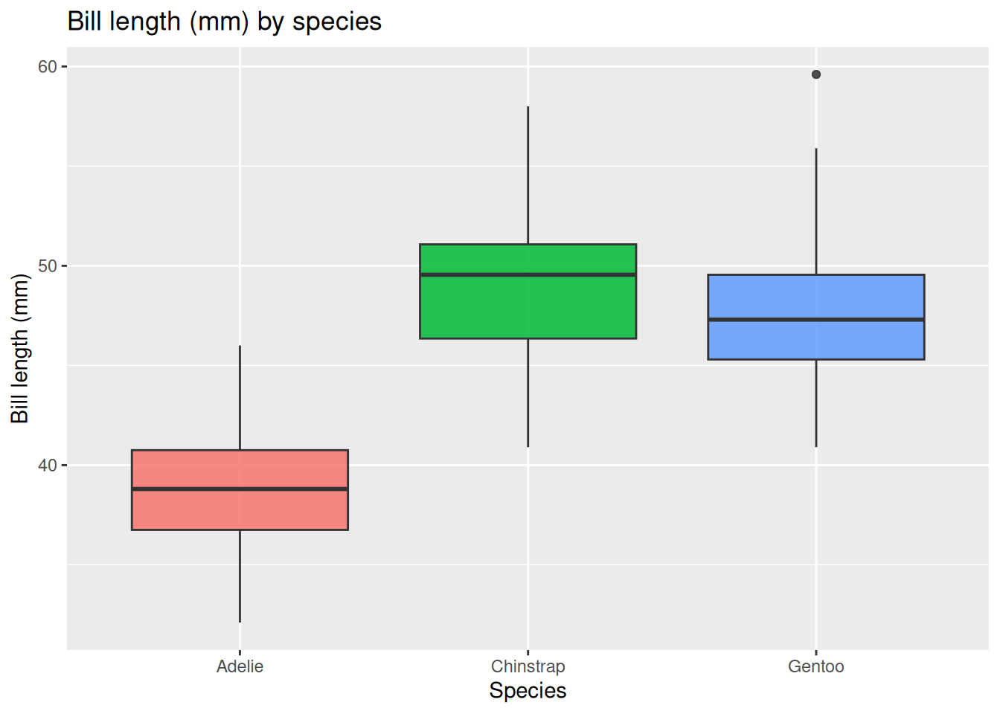
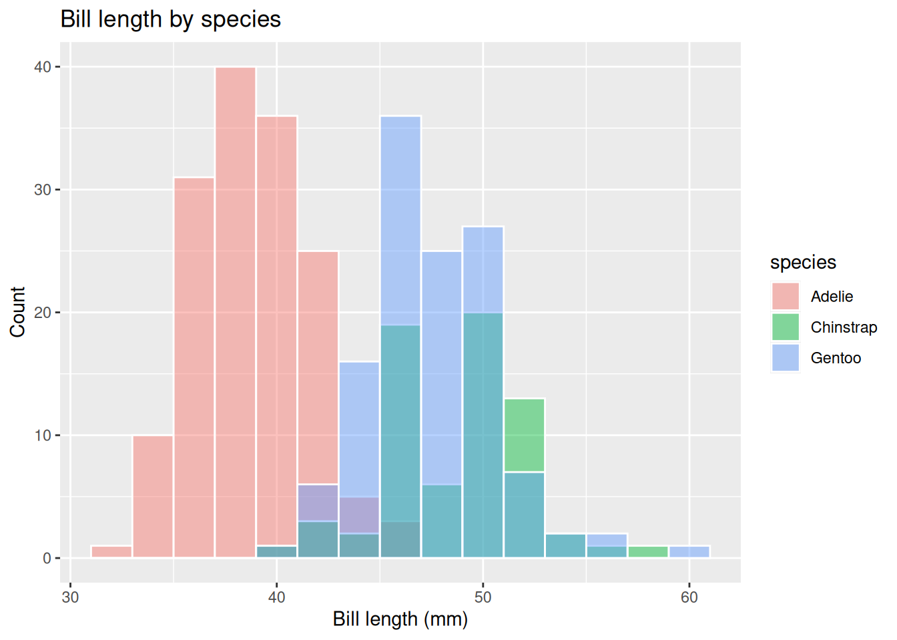
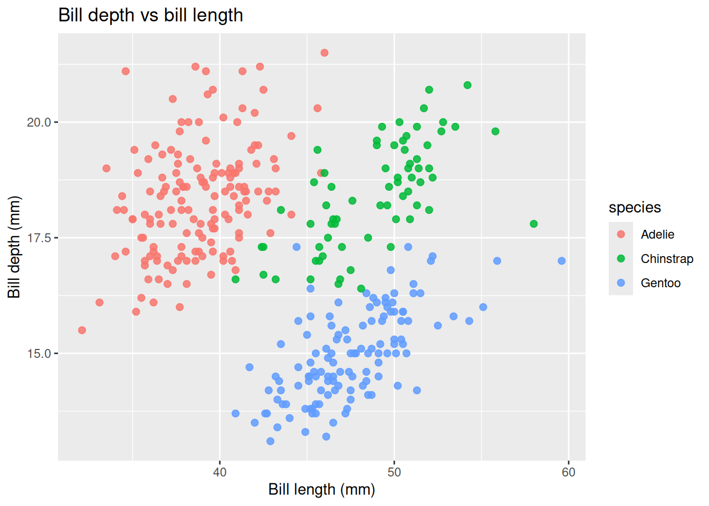
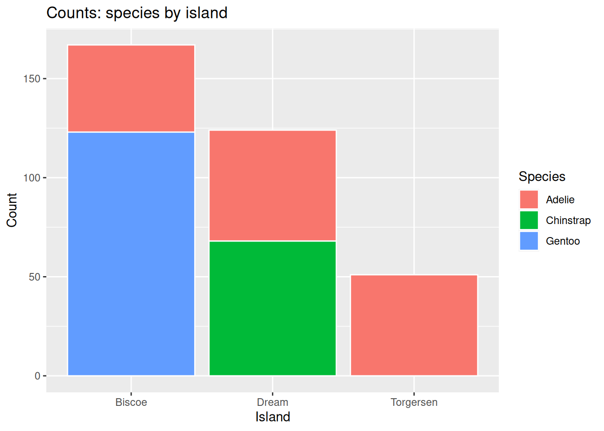
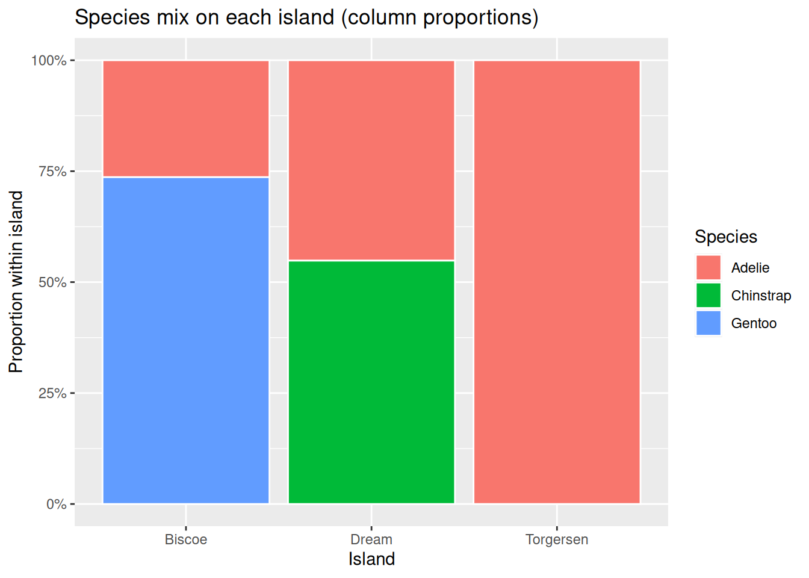
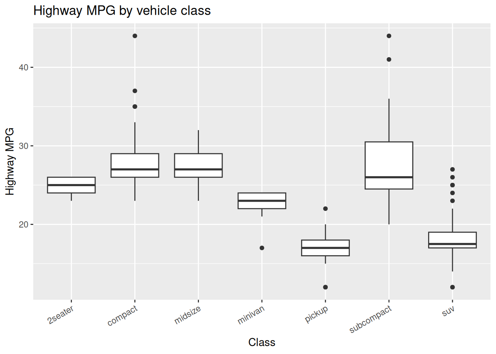
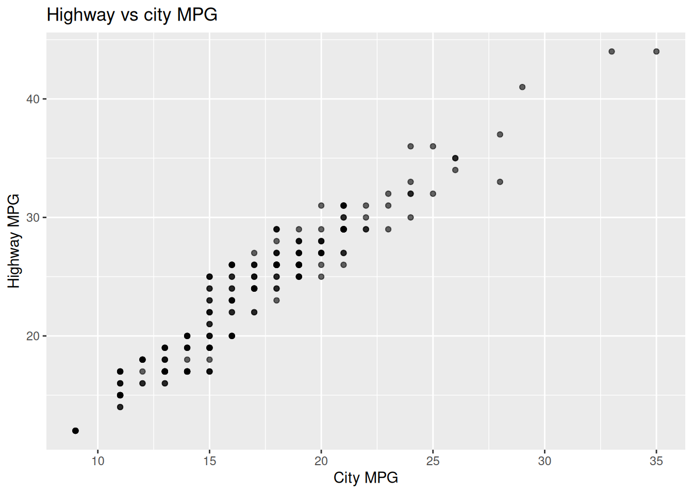
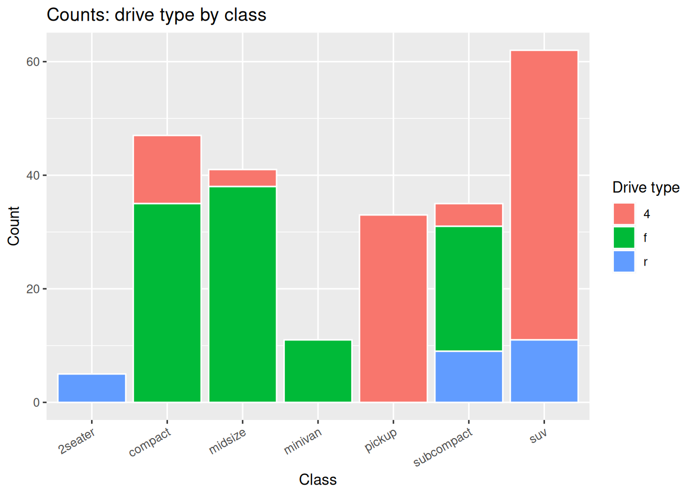

Code
if (!requireNamespace("tidyverse", quietly = TRUE)) {
install.packages("tidyverse", repos = "https://cloud.r-project.org")
}
library(tidyverse)STAT 109: Introductory Biostatistics
Open in Colab, after it opens, use Runtime → Change runtime type and select R if needed.
This lab lines up with Lecture 25 (numerical vs categorical), Lecture 26 (two numerical variables), and Lecture 27 (two categorical variables). By the end you should have the descriptive tools needed for Project 3: load a TidyTuesday-style dataset, clean missing values sensibly, and summarize pairs of variables with tables and plots.
By the end of this lab, you should be able to:
is.na(), summaries per column).read_csv() using a raw GitHub URL (TidyTuesday)./content/).| Function / pattern | What it does |
|---|---|
read_csv("url_or_path") |
Reads a CSV from the web or from a file path (e.g. after upload in Colab). |
is.na(x), sum(is.na(x)) |
Detects missing values; counts how many in a vector. |
summarize(across(everything(), ~ …)) |
Applies a summary (e.g. count of NA) to every column. |
drop_na(col1, col2, …) |
Drops rows with missing values in any of the listed columns. |
count(A, B) |
Counts rows for each combination of two variables (long format). |
pivot_wider() |
Turns long counts into a two-way table with column names from one variable. |
group_by() + mutate(prop = n / sum(n)) |
Converts cell counts to proportions within each group (row or column, depending on what you group by). |
group_by(cat) + summarize() |
Numeric summaries of one variable within each category. |
ggplot() + geom_boxplot() |
Compares a numerical variable across categories. |
ggplot() + geom_point() |
Scatterplot for two numerical variables. |
ggplot() + geom_col() |
Stacked bar chart when you map fill to a second categorical variable. |
geom_col(position = "fill") |
100% stacked bars (proportions within each bar); often with scale_y_continuous(labels = scales::label_percent()). |
if (!requireNamespace("tidyverse", quietly = TRUE)) {
install.packages("tidyverse", repos = "https://cloud.r-project.org")
}
library(tidyverse)Many TidyTuesday datasets are stored on GitHub. Open the dataset’s folder in the TidyTuesday repo, open the CSV, click Raw, and copy the URL from the address bar. Pass that string to read_csv().
We use the Palmer Penguins file published for TidyTuesday (same data idea as the palmerpenguins package, but loaded by URL so you practice the workflow you will use on other weeks).
penguins <- read_csv(
"https://raw.githubusercontent.com/rfordatascience/tidytuesday/master/data/2020/2020-07-28/penguins.csv",
show_col_types = FALSE
)
glimpse(penguins)Rows: 344
Columns: 8
$ species <chr> "Adelie", "Adelie", "Adelie", "Adelie", "Adelie", "A…
$ island <chr> "Torgersen", "Torgersen", "Torgersen", "Torgersen", …
$ bill_length_mm <dbl> 39.1, 39.5, 40.3, NA, 36.7, 39.3, 38.9, 39.2, 34.1, …
$ bill_depth_mm <dbl> 18.7, 17.4, 18.0, NA, 19.3, 20.6, 17.8, 19.6, 18.1, …
$ flipper_length_mm <dbl> 181, 186, 195, NA, 193, 190, 181, 195, 193, 190, 186…
$ body_mass_g <dbl> 3750, 3800, 3250, NA, 3450, 3650, 3625, 4675, 3475, …
$ sex <chr> "male", "female", "female", NA, "female", "male", "f…
$ year <dbl> 2007, 2007, 2007, 2007, 2007, 2007, 2007, 2007, 2007…head(penguins, 10)# A tibble: 10 × 8
species island bill_length_mm bill_depth_mm flipper_length_mm body_mass_g
<chr> <chr> <dbl> <dbl> <dbl> <dbl>
1 Adelie Torgersen 39.1 18.7 181 3750
2 Adelie Torgersen 39.5 17.4 186 3800
3 Adelie Torgersen 40.3 18 195 3250
4 Adelie Torgersen NA NA NA NA
5 Adelie Torgersen 36.7 19.3 193 3450
6 Adelie Torgersen 39.3 20.6 190 3650
7 Adelie Torgersen 38.9 17.8 181 3625
8 Adelie Torgersen 39.2 19.6 195 4675
9 Adelie Torgersen 34.1 18.1 193 3475
10 Adelie Torgersen 42 20.2 190 4250
# ℹ 2 more variables: sex <chr>, year <dbl>penguins |>
summarize(across(everything(), ~ sum(is.na(.)))) |>
pivot_longer(everything(), names_to = "variable", values_to = "n_missing") |>
filter(n_missing > 0)# A tibble: 5 × 2
variable n_missing
<chr> <int>
1 bill_length_mm 2
2 bill_depth_mm 2
3 flipper_length_mm 2
4 body_mass_g 2
5 sex 11For example, to compare species and island and use bill measurements, keep rows that have all of these non-missing:
pg_clean <- penguins |>
drop_na(species, island, bill_length_mm, bill_depth_mm)
nrow(penguins)[1] 344nrow(pg_clean)[1] 342You can instead filter(!is.na(...)) for the same columns. For Project 3, say in your report whether you dropped rows and how many.
When you are not using a URL, upload a file and read it from the path Colab assigns.
.csv (drag-and-drop or Upload).read_csv() inside quotes. Paths often look like "/content/penguins.csv" or "/content/drive/MyDrive/..." if using Drive.# Replace with the path you copied from Colab after uploading:
# my_data <- read_csv("/content/your_file_name.csv")On your own laptop (RStudio or Quarto), use a project-relative path or File → Import; the idea is the same: read_csv() needs the correct path string.
Use pg_clean from Part 2 so plots are not full of NA warnings.
pg_clean <- penguins |>
drop_na(species, island, bill_length_mm, bill_depth_mm, body_mass_g)Summaries by group (species is categorical; bill_length_mm is numerical):
pg_clean |>
group_by(species) |>
summarize(
n = n(), mean_bill_mm = mean(bill_length_mm), sd_bill_mm = sd(bill_length_mm), median_bill_mm = median(bill_length_mm)
)# A tibble: 3 × 5
species n mean_bill_mm sd_bill_mm median_bill_mm
<chr> <int> <dbl> <dbl> <dbl>
1 Adelie 151 38.8 2.66 38.8
2 Chinstrap 68 48.8 3.34 49.6
3 Gentoo 123 47.5 3.08 47.3Boxplot, distribution of bill length within each species:
ggplot(pg_clean, aes(x = species, y = bill_length_mm, fill = species)) +
geom_boxplot(alpha = 0.85, show.legend = FALSE) +
labs(
title = "Bill length (mm) by species", x = "Species", y = "Bill length (mm)"
)
Overlaid histograms (optional; from the same lecture idea as comparing groups):
ggplot(pg_clean, aes(x = bill_length_mm, fill = species)) +
geom_histogram(position = "identity", alpha = 0.45, color = "white", binwidth = 2) +
labs(title = "Bill length by species", x = "Bill length (mm)", y = "Count")
Scatterplot of bill_length_mm vs bill_depth_mm (both numerical; color by species optional):
ggplot(pg_clean, aes(x = bill_length_mm, y = bill_depth_mm, color = species)) +
geom_point(alpha = 0.85, size = 2) +
labs(
title = "Bill depth vs bill length", x = "Bill length (mm)", y = "Bill depth (mm)"
)
In a sentence: comment on form (roughly linear or curved), direction (positive or negative association), and strength (strong to weak), as in Lecture 26.
Two-way table of counts (species × island):
pg_clean |>
count(species, island) |>
pivot_wider(names_from = island, values_from = n, values_fill = 0)# A tibble: 3 × 4
species Biscoe Dream Torgersen
<chr> <int> <int> <int>
1 Adelie 44 56 51
2 Chinstrap 0 68 0
3 Gentoo 123 0 0Proportions, three denominators
pg_clean).# Joint
pg_clean |>
count(species, island) |>
mutate(prop = n / sum(n))# A tibble: 5 × 4
species island n prop
<chr> <chr> <int> <dbl>
1 Adelie Biscoe 44 0.129
2 Adelie Dream 56 0.164
3 Adelie Torgersen 51 0.149
4 Chinstrap Dream 68 0.199
5 Gentoo Biscoe 123 0.360# Row: within species
pg_clean |>
count(species, island) |>
group_by(species) |>
mutate(prop_row = n / sum(n)) |>
ungroup()# A tibble: 5 × 4
species island n prop_row
<chr> <chr> <int> <dbl>
1 Adelie Biscoe 44 0.291
2 Adelie Dream 56 0.371
3 Adelie Torgersen 51 0.338
4 Chinstrap Dream 68 1
5 Gentoo Biscoe 123 1 # Column: within island
pg_clean |>
count(species, island) |>
group_by(island) |>
mutate(prop_col = n / sum(n)) |>
ungroup()# A tibble: 5 × 4
species island n prop_col
<chr> <chr> <int> <dbl>
1 Adelie Biscoe 44 0.263
2 Adelie Dream 56 0.452
3 Adelie Torgersen 51 1
4 Chinstrap Dream 68 0.548
5 Gentoo Biscoe 123 0.737Stacked bar charts
ct <- pg_clean |> count(species, island)
ggplot(ct, aes(x = island, y = n, fill = species)) +
geom_col(color = "white") +
labs(
title = "Counts: species by island", x = "Island", y = "Count", fill = "Species"
)
ggplot(ct, aes(x = island, y = n, fill = species)) +
geom_col(position = "fill", color = "white") +
scale_y_continuous(labels = scales::label_percent()) +
labs(
title = "Species mix on each island (column proportions)", x = "Island", y = "Proportion within island", fill = "Species"
)
mpg) for extra practice (optional)The mpg data frame ships with ggplot2. It is handy for short practice (no download). Examples: hwy vs class (numerical vs categorical); hwy vs cty (two numerical); class vs drv (two categorical).
data("mpg", package = "ggplot2")
ggplot(mpg, aes(x = class, y = hwy)) +
geom_boxplot() +
theme(axis.text.x = element_text(angle = 30, hjust = 1)) +
labs(title = "Highway MPG by vehicle class", x = "Class", y = "Highway MPG")
ggplot(mpg, aes(x = cty, y = hwy)) +
geom_point(alpha = 0.6) +
labs(title = "Highway vs city MPG", x = "City MPG", y = "Highway MPG")
mpg |> count(class, drv) |>
ggplot(aes(x = class, y = n, fill = drv)) +
geom_col(color = "white") +
theme(axis.text.x = element_text(angle = 30, hjust = 1)) +
labs(title = "Counts: drive type by class", x = "Class", y = "Count", fill = "Drive type")